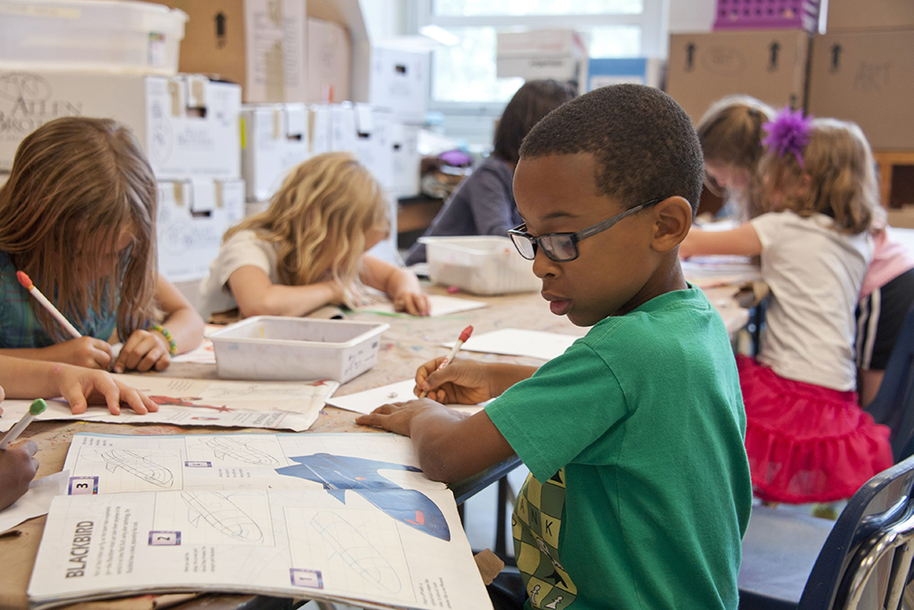

Tidslinje over den Kreative skoletid
I løbet af de sidste 60 år har det danske skolesystem ændret sig gevaldigt. Der var et tidspunkt hvor politikere mente at vi havde det bedste system i verden, hvor der ikke var meget fokus på hverken kreativitet eller innovation. Med nye skole systemer, og nye reformer har undervisningsmetoder og fokuspunkter forhåbentligt ændret sig til det bedre, så vi kan skabe den bedste fremtid for alle.
-

Selve skolens struktur blev i perioden 1960-1970 ændret markant. Det er i denne periode hvor skolen forandrede sig fra den ældre struktur med forskel mellem by, land og mellem sociale grupper, til en skole, der i mange træk ligner nutidens. Her er idealet, at alle børn får samme type skolegang. I 1970’erne blev de sidste kønsopdelinger mellem fagene afskaffet, så drenge også havde håndarbejde og husgerning og pigerne sløjd.
-

Generelt var 1970 til 1980 et elev antalsmæssigt lavpunkt for frie grundskoler, selvom der i perioden kom en række nye private skoler til med fokus på kreativitet og bestemte politiske overbevisninger. Samtidig tilbød flere og flere skoler børnehaveklasse, der skulle forberede de mindste elever på skolegangen.
-

Fra 1980-2000 mente mange politikere og mange andre at den danske folkeskole var verdens bedste. Undersøgelser viste dog, at dette ikke var tilfældet. Der blev spurgt ind til hvad der skulle til for at skolesystemet kunne blive bedre. Der blev lagt fokus på at eleverne skulle spise sundt, og køre med cykelhjelm, og der skete ikke mange ændringer derudover.
-

Musikfaget er faldet med 49% hvilket vil sige at elever i folkeskolen får mindre tid til at være kreative i musiklokalet, og mere tid til at fokusere på boglige fag. Derudover bliver pædagogerne oplært i mange flere boglige fag, som gør at de ikke er lige så kvalificerede til at lærer kreative fag. På et typisk pædagogseminarium er antallet af timer i faget teater/drama inden for de sidste 10 år gået fra 335 timer til 175 timer - en reduktion på 160 timer.
-

Med den nye folkeskolereform i 2013 blev det obligatorisk for alle folkeskoler at indføre innovation og entreprenørskab som en del af fagene og i tværfaglige projekter. Emnet skulle netop udvikle elevernes kompetencer til at skabe, udvikle og handle. Ifølge analyser fra Fonden for Entreprenørskab er det dog kun cirka 20 % af alle skoleelever, der møder en form for entreprenørskab i løbet af deres skoleliv.
-

Nu hvor FN’s verdens mål er trådt i kraft er skolerne begyndt at lægge vægt på at de elever som bliver uddannet skal tænke anderledes, kreativt og med udsigt på fremtiden. Selvom folkeskolereformen fra 2013 stadig er den gældende i 2020, så efterspørger forældre stadig mere kreativitet i skolen!
-

Det er svært at vide hvordan fremtiden ser ud, men hvis man kigger tilbage kan man se at kreativitet, innovation og iværksætteri er blevet en normal ting som børn og unge har brug for i deres opvækst og undervisning. Folkeskolereformen fra 2013 og FN’s verdens mål er skridt i den rigtige retning, så er spørgsmålet bare om det er nok til at ændre vores fremtid.